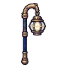
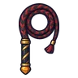
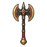
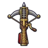
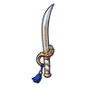
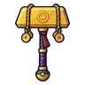
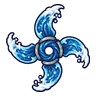
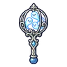
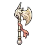
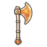

หลุมดาว ชั้น 1 · พื้นแก้ว
ดูบนแผนที่และวิธีไป วางแผนฟาร์ม
ดันเจี้ยนในที่ราบสูง · Lv 97–99
ชั้นล่าง / ดันเจี้ยน
มอนในแมพ (4)
| มอน | Lv | ธาตุ | โซน |
|---|---|---|---|
| 97–99 | ศักดิ์สิทธิ์ | ||
| 97–98 | ศักดิ์สิทธิ์ | ||
| ผู้จุดตะเกียงรุ่นแรก | 98–99 | วิญญาณ | |
| 98–99 | ศักดิ์สิทธิ์ |
อุปกรณ์ที่ดรอปในแมพนี้
| ของ | โอกาสสูงสุด |
|---|---|
 ตะเกียงประภาคาร | 0.25% |
| 0.25% | |
 แส้หนังถักดิ้นทอง | 0.25% |
 ขวานยักษ์จอมทัพ | 0.25% |
 หน้าไม้กลช่างหลวง | 0.25% |
 ดาบคู่ราชองครักษ์ | 0.25% |
| ชุดกุหลาบหนาม | 0.15% |
| เกราะดาราจักร | 0.15% |
 ค้อนยักษ์ทองคำแท่ง | 0.12% |
 ดาวยักษ์น้ำวนลึก | 0.12% |
 ออร์บฝูงดวงวิญญาณ | 0.12% |
 ขวานยักษ์ยูนิคอร์น | 0.12% |
| หมวกขนหมาป่าหิมะ | 0.08% |
 ขวานศิลาตะวัน | 0.06% |
| 0.06% |